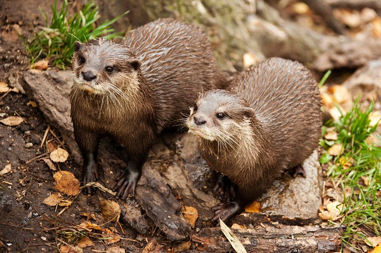
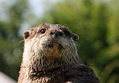
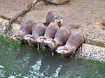

Good day to you! Instead of explaining how I am quirky, I will demonstrate it by showing how I perceive otters in all of their glory. All you need to know are two things. That I am awesome, and you are equally awesome.
Otter of the week
I have taken it upon myself to name these otters Reginald (left) and Gerald (right). They enjoy long walks on the beach and various types of cod. All otters are friends, and have friends. To be an otter is to be loved.
Otter Pride!
All otters should show pride. Whether through kindness or through positivity..
 How to be an awesome otter.
You do not become an otter, the otter lies within us all. The otter represents creativity and passion. The ability to be kind to others and maintain positivity. To be able to see beauty in all things and ejoy life to the fullest. That is you, and that is me.
Party Time!
Call us: 1-555-GO-OTTER
Email us: otters@awesomeotters.com
All otters are linked. We share our creativity and knowledge through social media, join us.


© I am an awesome otter. No Rights Reserved.